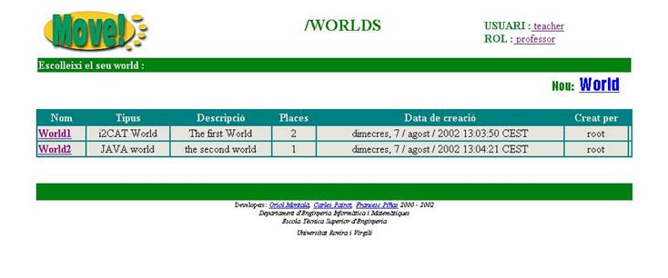

2.2 Zona Worlds
Una vegada hem estat autentificats pel MOVE!, el seg�ent que ens trobarem ser� la zona de WORLDS.

Aqu� podrem veure una taula amb tots els Worlds que hi ha creats actualment. La informaci� que podrem veure d'ells �s la seg�ent:
- Nom: nom del World
- Tipus: tipus de World
- Descripci�: descripci� del World
- Places: n� de places que cont� aquest World
- Data de creaci�: data en qu� ha estat creat
- Creat per: login de l'usuari que l'ha creat
Podrem entrar en qualsevol d'ells nom�s clicant sobre el seu nom, o b� eliminar-lo clicant sobre  .
(NOTA: Nom�s podrem eliminar un world en el sup�sit de que hagi estat creat per nosaltres o b� en el cas que tinguem el rol d'administrador)
.
(NOTA: Nom�s podrem eliminar un world en el sup�sit de que hagi estat creat per nosaltres o b� en el cas que tinguem el rol d'administrador)